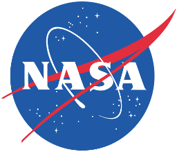

Hello Drone 34659786, NASA Mission Control welcomes you to your first day on the job!
Your task is to make as much money for our business partners as possible and saving the earth from errant asteroids before your energy runs out.
Asteroid Mining and Energy Usage
You will have three options when interacting with asteroids - mining them, destroying them, and moving them around for mining later. Each of these actions costs energy. You can see the current value of commoditities in your HUD. You have until your energy runs out to complete your mission, after which point your program will be shut down and only restarted pending your performance review.
Asteroid Classes
Asteroids are categorized into different classes depending on colours of light reflecting off of them. Depending on the colours reflected, it is possible to guess their composition. Asteroids fall into three large categories - C (for carbonaceous objects), S (for silicaceous objects), and X (for metallic objects). The ingredients needed for life, for example water and carbon, are more likely to be found on C-type asteroids, whereas S-type objects are like rocks you would find on Earth, and X-type asteroids contain more metals like iron, or more precious metals like gold, copper, and zinc.
Under these broad categories, asteroids are classified into smaller categories. There are also smaller categories of asteroids that aren't classified in any of the three main categories.
In order to figure out what asteroids will be profitable to mine, you will need to look at the ultraviolet, visible and infrared spectrums coming off of the asteroids. Certain types of asteroids are more abundant in certain radiuses, so you can also use the location of the asteroid to guess what it's made of. You can see the relative reflectance spectrum of the various asteroid classes in the graph in the HUD. You can then activate various filters to guess at the classification of the asteroids in view.
Certain classes of asteroids are more common at certain distances from the sun. For example, C-type asteroids are more abundant further from the sun, while S-type asteroids are more abundant closer to the sun. You can also check the abundance of each type with relation to its distance from the sun in the graph in the HUD.